PCA
Principal Component Analysis, or PCA, is a dimensionality-reduction method that is often used to reduce the dimensionality of large data sets.
Reducing the number of variables of a data set naturally comes at the expense of accuracy, but the trick in dimensionality reduction is to trade a little accuracy for simplicity. Because smaller data sets are easier to explore and visualize, it becomes easier and faster to analyze your data.
The idea of PCA is simple — reduce the number of variables of a data set, while preserving as much information as possible.
The pca library contains various functionalities to carefully examine the data, which can help for better understanding and removal of redundant information.
Standardization
Feature scaling through standardization (or Z-score normalization) is an important preprocessing step for many machine learning algorithms. Standardization involves rescaling the features such that they have the properties of a standard normal distribution with a mean of zero and a standard deviation of one. The standardization step depends on the type of variables, the distribution of the data, and also your aim. In general, the standardizing step is to range the continuous initial variables so that each one of them contributes equally to the analysis.
It is utterly important to carefully standardize your data because PCA works under the assumption that the data is normal distributed, and is very sensitive to the variance of the variables. Or in other words, large differences between the ranges of variables will dominate over those with small ranges. Let me explain this by example; a variable that ranges between 0 and 100 will dominate over a variable that ranges between 0 and 1. Transforming the data to comparable scales can prevent this issue.
The most straightforward manner for standardization is by computing the Z-scores or Standardized scores. Once the standardization is done, all the variables will be transformed to the same scale.
Scaling your data can easily being done with the sklearn library. In the following example we will import the wine dataset and scale the variables. Think carefully whether you want to standardize column-wise or row-wise. In general, you want to standardize row-wise. This means that the Z-score is computer per row.
# Import the StandardScaler
from sklearn.preprocessing import StandardScaler
from sklearn import datasets
# Load dataset
data = datasets.load_wine()
X = data.data
y = data.target
col_labels = data.feature_names
#In general it is a good idea to scale the data
scaler = StandardScaler(with_mean=True, with_std=True)
X = scaler.fit_transform(X)
The normalization step is also incorporated in pca that can be set by the parameter normalize=True.
# Load library
from pca import pca
# Initialize pca with default parameters
model = pca(normalize=True)
An example of the differences of feature reduction using PCA with and without standardization.
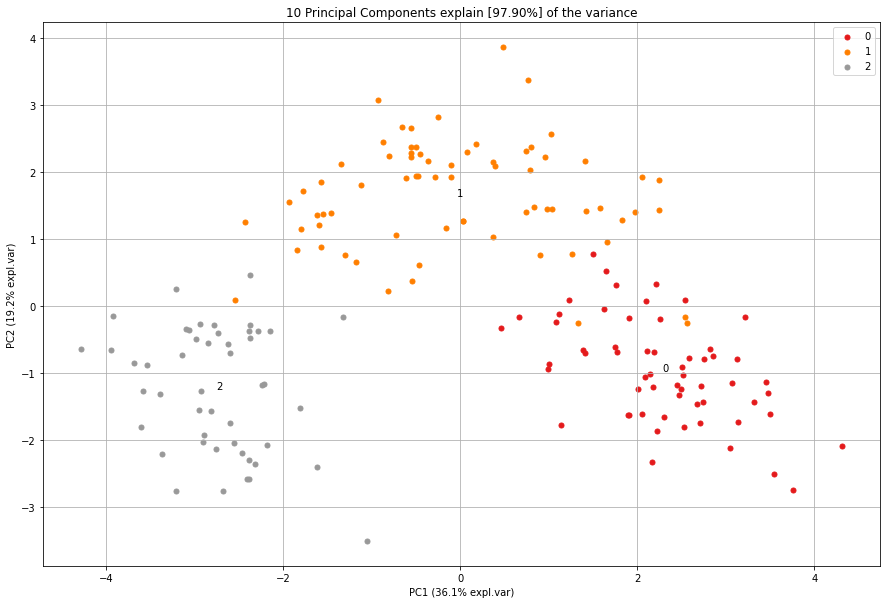 |
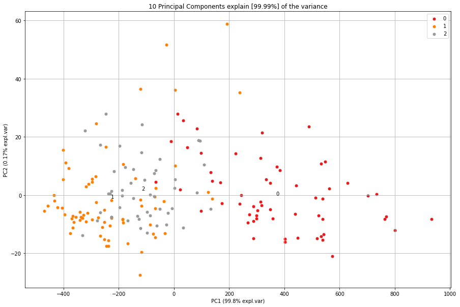 |
Explained Variance
Before jumping into the explained variance, we first need to understand what principal components are.
Principal components are new (latent) variables that are constructed as linear combinations or mixtures of the initial variables. These combinations are in such a way that the new variables (i.e., principal components) are uncorrelated and most of the information within the initial variables is squeezed or compressed into the first components. Explained variance refers to the variance explained by each of the principal components (eigenvectors). By organizing information Principal
Let’s compute the explained variance for the wine dataset (this is a follow up from the previous standardization part).
# Load library
from pca import pca
# Initialize pca with default parameters
model = pca(normalize=True)
# Fit transform
results = model.fit_transform(X)
# Plot the explained variance
model.plot()
In this example we have 13 variables in the wine dataset, and thus 13 dimensions. PCA will optimize to store maximum variance in the first PC, then in the second and so on, until having something like shown in the plot below. This plot provides insights in the amount of information or explained variance in the data. We can clearly see that the 1st PC contains almost 36% of explained variance in total. With the top 10 PCs we cover 97.9% of all variance.

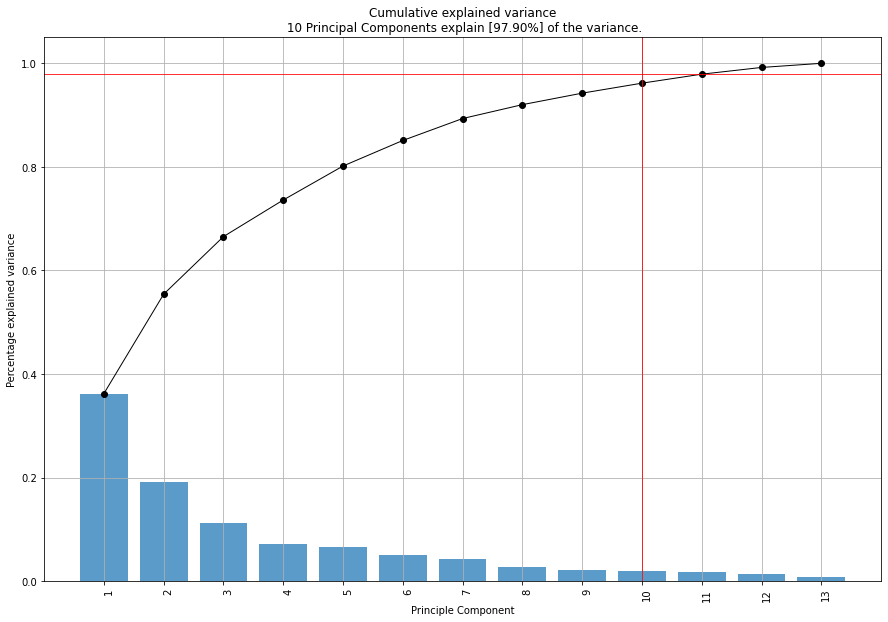
There are as many principal components as there are variables in the data. The explained variance plot can therefore never have more then 13 PCs in this case. Principal components are constructed in such a manner that the first principal component accounts for the largest possible variance in the data set.
Loadings
It is important to realize that principal components are less interpretable and don’t have any real meaning since they are constructed as linear combinations of the initial variables. But we can analyze the loadings which describe the importance of the independent variables. The first principal component (Y1) is given by a linear combination of the variables X1, X2, …, Xp, and is calculated such that it accounts for the greatest possible variance in the data.

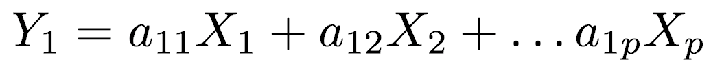
Of course, one could make the variance of Y1 as large as possible by choosing large values for the weights a11, a12, … a1p. To prevent this, the sum of squares of the weights is constrained to be 1.

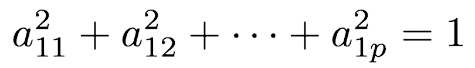
For example, let’s assume that the scatter plot of our data set is as shown below. Can we guess the first principal component? Yes, it’s approximately the line that matches the purple marks because it goes through the origin and it’s the line in which the projection of the points (red dots) is the most spread out. Or mathematically speaking, it’s the line that maximizes the variance which is the average of the squared distances from the projected points (red dots) to the origin.

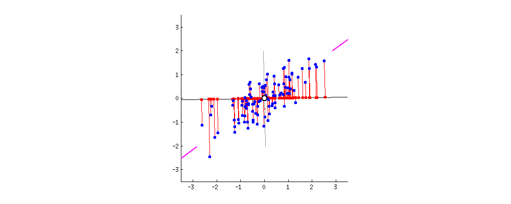
The second principal component is calculated in the same way, with the conditions that it is uncorrelated with (i.e., perpendicular to) the first principal component and that it accounts for the next highest variance.

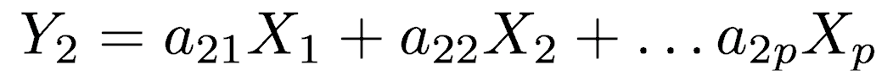
This continues until a total of p principal components have been calculated, that is, the number of principal components is the same as the original number of variables. At this point, the total variance on all of the principal components will equal the total variance among all of the variables. In this way, all of the information contained in the original data is preserved; no information is lost: PCA is just a rotation of the data.
The elements of an eigenvector, that is, the values within a particular row of matrix, are the weights aij. These values are called the loadings, and they describe how much each variable contributes to a particular principal component.
Large loadings (+ or -) indicate that a particular variable has a strong relationship to a particular principal component.
The sign of a loading indicates whether a variable and a principal component are positively or negatively correlated.
Let’s go back to our wine example and plot the loadings of the PCs.
# Load dataset
data = datasets.load_wine()
X = data.data
y = data.target
col_labels = data.feature_names
# Load library
from pca import pca
# Initialize pca with default parameters
model = pca(normalize=True)
# Fit transform and include the column labels and row labels
results = model.fit_transform(X, col_labels=col_labels, row_labels=y)
# Scatter plot with loadings
model.biplot()
First of all, we see a nice seperation of the 3 wine classes (red, orange and gray samples). In the middle of the plot we see various arrows. Each of the arrows describes its story in the Principal Components. The angle of the arrow describes the contribution of the variable that is seen in the particular PC. The length describes the strength of the loading.

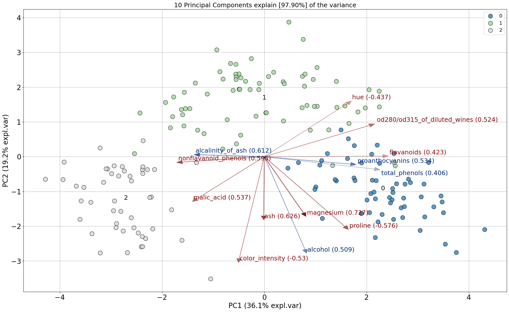
Examine the loadings
Let’s examine the loadings (arrows) a bit more to understand what is going on in the distribution of the samples given the variables. The variable flavanoids has a positive loading and explaines mostly the variance in the first PC1 (it is almost a horizontal line). If we would color the samples in the scatter plot based on flavanoids values, we expect to see a distinction between samples that are respectively left and right side of the scatter plot.
# Grap the values for flavanoids
X_feat = X[:, np.array(col_labels)=='flavanoids']
# Color based on mean
color_label = (X_feat>=np.mean(X_feat)).flatten()
# Scatter based on discrete color
model.scatter(labels=color_label, title='Color on flavanoids (Gray colored samples are > mean)')
# 3d scatter plot
model.scatter3d(labels=color_label, title='Color on flavanoids (Gray colored samples are > mean)')
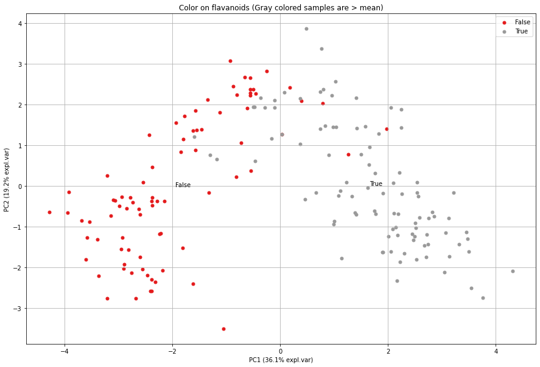 |
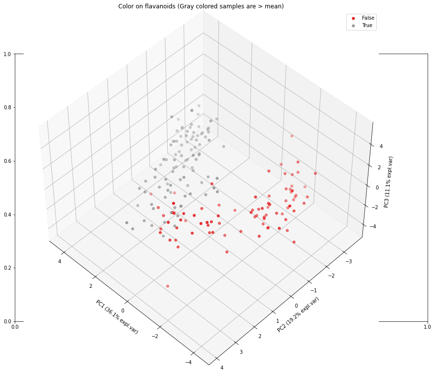 |
Let’s take another variable for demonstration purposes. The variable alcohol has a strong negative loading (almost vertical), and should therefoe explains mostly the 2nd PC but the angle is not exactly vertical, thus there is also some variance seen in the 1st PC. Let’s color the samples based on alcohol.
# Grap the values for alcohol
X_feat = X[:, np.array(col_labels)=='alcohol']
# Color based on mean
color_label = (X_feat>=np.mean(X_feat)).flatten()
# Scatter based on discrete color
model.scatter(labels=color_label, title='Color on alcohol (Gray colored samples are < mean)')
# 3d scatter plot
model.scatter3d(labels=color_label, title='Color on alcohol (Gray colored samples are < mean)')
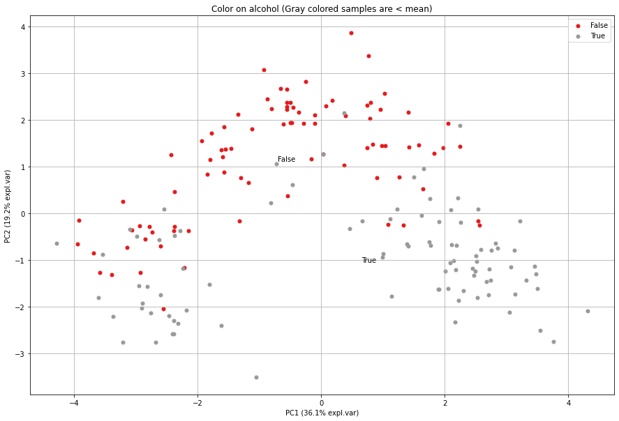 |
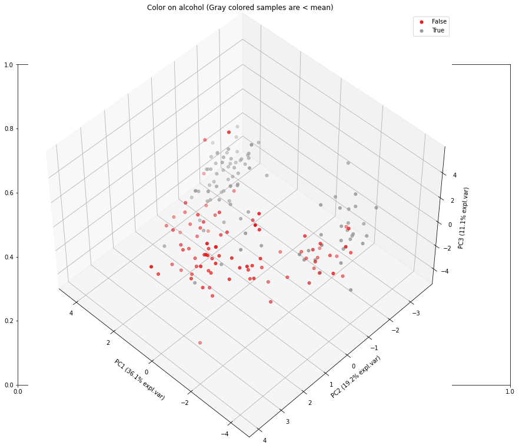 |
Best Performing Features
Extracting the best performing features is based on the loadings of the Principal Components, which are readily computed. The information is stored in the object itself. We can extract it as following:
# Print the top features.
print(model.results['topfeat'])
# PC feature loading type
# PC1 flavanoids 0.422934 best
# PC2 color_intensity -0.529996 best
# PC3 ash 0.626224 best
# PC4 malic_acid 0.536890 best
# PC5 magnesium 0.727049 best
# PC6 malic_acid -0.536814 best
# PC7 nonflavanoid_phenols 0.595447 best
# PC8 hue -0.436624 best
# PC9 proline -0.575786 best
# PC10 od280/od315_of_diluted_wines 0.523706 best
# PC9 alcohol 0.508619 weak
# PC3 alcalinity_of_ash 0.612080 weak
# PC8 total_phenols 0.405934 weak
# PC6 proanthocyanins 0.533795 weak
We see that most of the variance for the 1st PC is derived from the variable flavanoids. For the 2nd component, it is by color_intensity, etc.
Logistic PCA
Standard PCA is built for continuous values (such as height, weight, or sensor
readings). Logistic PCA is built for binary values (0/1), such as one-hot
encoded categories or yes/no indicators.
A simple way to think about Logistic PCA is:
It looks for a small set of hidden patterns (components) in your binary matrix.
Those patterns are used to reconstruct probabilities for each cell.
A probability close to
1means “likely on” and close to0means “likely off”.Model quality is measured by how much better these reconstructed probabilities are compared to a very simple baseline model (the null model).
That improvement is summarized as deviance explained.
Null model: a baseline that ignores component structure.
Fitted model: uses the selected components.
Deviance explained: how much of the null-model error is removed by the fitted model.
So, if deviance explained is 0.95, the model removes about 95% of the error
relative to the null model.
Logistic PCA (deviance) versus PCA (variance)
For standard PCA, model quality is expressed in explained variance. Variance measures spread around the mean in continuous data (it is the average squared deviation from that mean).
For Logistic PCA on binary/one-hot data, this quantity is not defined. Instead,
pca(method='logistic_pca') reports deviance explained.
Deviance is a likelihood-based goodness-of-fit measure for binary outcomes, and
deviance explained is the proportion of null deviance captured by the
model.
In practice, this means that n_components behaves as follows for
method='logistic_pca':
n_componentsas an integer (for example2): fit exactly that many components.n_componentsas a float between0and1(for example0.95): select the smallest number of components whose deviance explained reaches that threshold.
Because Logistic PCA models are not nested, the threshold search fits
1, 2, 3, ... components until it reaches the target (or the maximum allowed
components).
Why this differs from explained variance
Variance is based on distances around a mean and is natural for continuous Gaussian-like data.
Deviance is based on likelihood for binary outcomes and is natural for Bernoulli/logistic modeling.
So for Logistic PCA, deviance explained is the right metric, while explained variance is not defined.
Practical behavior
The default
n_components=0.95works formethod='logistic_pca'and means: “pick the smallest number of components that reaches 95% deviance explained.”After fitting,
model.n_componentsis the selected integer.results['deviance_explained_path']stores the path used in the search, soplot()can reuse it.If the threshold is unreachable, the model uses the maximum allowed number of components and logs a warning.
If the data has no variation (deviance explained undefined), the model falls back to 1 component and logs a warning.
Sparse PCA
Use method=’sparse_pca’ when your main goal is interpretable dimensionality reduction through feature selection within components.
Why:
Sparse PCA introduces a sparsity constraint on the component loadings.
Many loadings are exactly zero, meaning that each component is associated with a smaller subset of the original features.
This makes it easier to identify which variables contribute to a particular component.
Unlike standard PCA, the objective is not solely to maximize explained variance, but also to obtain a sparse and interpretable representation.
Most suitable data
Continuous numerical data with many correlated variables.
Datasets where identifying groups of related features is important.
Applications where component interpretability is more important than maximizing explained variance.
Data that can be represented as a dense numerical matrix after preprocessing.
How it works:
The input data is centered.
A sparse component representation is learned by optimizing a reconstruction objective with a sparsity penalty.
The sparsity parameter controls how strongly the algorithm penalizes non-zero loadings.
The resulting components contain only a subset of the original features.
The observations are projected onto the learned components to obtain a lower-dimensional representation.
Trade-offs:
Components are generally not orthogonal, unlike standard PCA.
The amount of explained variance is less straightforward to interpret because the components are not necessarily orthogonal.
Stronger sparsity produces simpler components but can result in greater reconstruction error.
The resulting components can be less stable, particularly when features are highly correlated.
Selecting an appropriate sparsity level can require experimentation.
Computation can be heavier than Truncated SVD on very large sparse matrices.
Missing values must be handled before fitting the model.
Typical applications
Identifying a compact set of influential variables.
Feature grouping and interpretation.
Biomedical and omics data analysis.
Exploratory analysis of datasets with many correlated measurements.
Truncated SVD (LSA)
Use method=’trunc_svd’ when your main goal is efficient dimensionality reduction on large, high-dimensional, sparse matrices.
Why
Truncated SVD decomposes the input matrix into a lower-dimensional representation without explicitly centering the data.
Unlike standard PCA, it can operate directly on sparse matrices without converting them into dense representations.
This makes it particularly suitable for large datasets where memory consumption and computational efficiency are important.
In text mining, Truncated SVD is commonly known as Latent Semantic Analysis (LSA), where it identifies latent semantic structures in document-term matrices.
Most suitable data
High-dimensional sparse numerical matrices.
Text representations such as TF-IDF and bag-of-words.
Document-term and word-frequency matrices.
Recommender-system interaction matrices.
Large datasets where explicitly centering the input matrix would be computationally expensive.
How it works
The input matrix is decomposed using a truncated SVD algorithm.
Only the leading singular values and their corresponding singular vectors are retained.
The original observations are projected onto the selected singular vectors.
The resulting lower-dimensional representation captures the dominant directions of variation in the original matrix.
Trade-offs
Unlike standard PCA, the input matrix is not centered before decomposition.
Components are generally dense and may be difficult to interpret.
The resulting components are orthogonal, but their interpretation differs from centered PCA because they represent directions in the original, uncentered feature space.
Explained variance is not directly equivalent to that of standard PCA.
Missing values must be handled before fitting the model.
The quality of the decomposition depends on the selected number of components.
Typical applications
Latent Semantic Analysis (LSA) in natural language processing.
Text classification and document clustering.
Dimensionality reduction of TF-IDF matrices.
Recommender systems and sparse interaction data.
Efficient preprocessing for downstream machine learning algorithms.
References
[1] https://builtin.com/data-science/step-step-explanation-principal-component-analysis
[2] http://strata.uga.edu/8370/lecturenotes/principalComponents.html
[3] https://arxiv.org/abs/1510.06112, Landgraf, A. J., & Lee, Y. (2015). Dimensionality Reduction for Binary Data through the Projection of Natural Parameters.